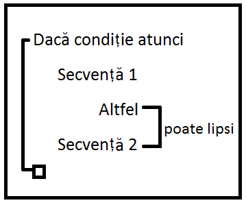
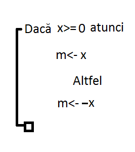
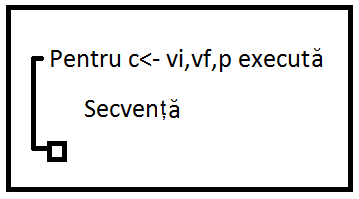
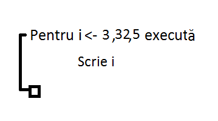
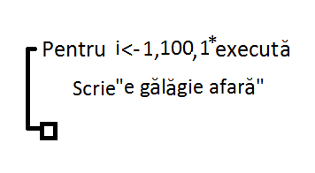
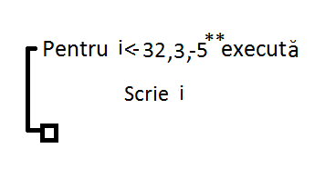
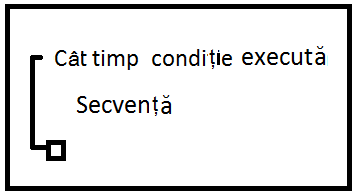
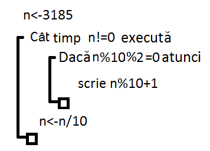
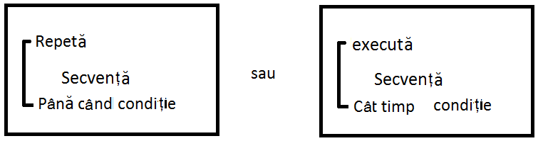

Definiție: Se numește limbaj pseudocod o metoda de reprezentare a algoritmilor care utilizează niște cuvinte cheie desprinse din limbajul natural.
Limbajul pseudocod are trei tipuri de structuri de control:
1) liniară
2) alternativă
3) repetitivă
1) structura liniară:
Cuprinde instrucțiuni de scriere, citire, atribuire
a) scriere:
scrie expresie1, expresie 2, …, expresie n
scrie x,y,z
scrie 3
scrie „info”
b) citire:
citește variabila 1, variabila 2, …, variabila n
- a citi o variabila ȋnseamnă a solicita o valoare la tastatură sau dintr-un fișier pentru acea variabilă
c) atribuire
variabila <- expresie („<-” se citește „ia valoarea”)
2) structura alternativă:

Condiția = expresie logică (care poate lua valoarea adevărat sau fals). Dacă este adevărată, se execută secvența 1 și se ignoră secvența 2, Dacă este falsă, se execută secvența 2 și se ignoră secvența 1.
Ex.: scrieți un algoritm ȋn pseudocod care citește un număr real x și determinați modulul acestuia.

3) Structura repetitivă
a) cu număr cunoscut de pași (cu contor)

C= variabila contor care ia, pe rȃnd, toate valorile de la vi (valoare inițiala) la vf (valoare finală) din p ȋn p (pas).
Pentru fiecare valoare luată de c se execută secvența.

I aparține {3,8,13,18,23,28} => se afișează valorile 3 8 13 18 23 28


I ? {32,27,22,17,12,7} => se afișează valorile 32 27 22 17 12 7
b) cu test inițial

Se testează condiția și dacă este adevărată, se execută secvența, apoi se testează din nou condiția și se repetă pȃnă cȃnd aceasta devine falsă.

n=3185 !=0=> 3185%10%2=5%2=1 (nu afișez nimic)=>n=318
n=318 !=0=> 318%10%2=8%2=0 =>318%10+1=8+1=9 => n=31
n=31 !=0=> 31%10%2=1%2=1 (nu afișez nimic)=>n=3
n=3 !=0=> 3%10%2=3%2=1 (nu afișez nimic)=>n=0
n=0 => STOP cȃt timp
c) cu test final

Structura cu test final execută secvența și apoi testează condiția. Dacă condiția este falsă (pentru prima variantă), respectiv adevărată (pentru a doua variantă), se reia execuția secvenței pȃnă cȃnd se schimbă valoarea de adevăr a acesteia. Structura cu test final se execută cel puțin o dată.
*Dacă p=1, lipsește din sintaxă
**Dacă p<0, atunci vi>=vf, ȋn caz contrar instrucțiunea nu se execută